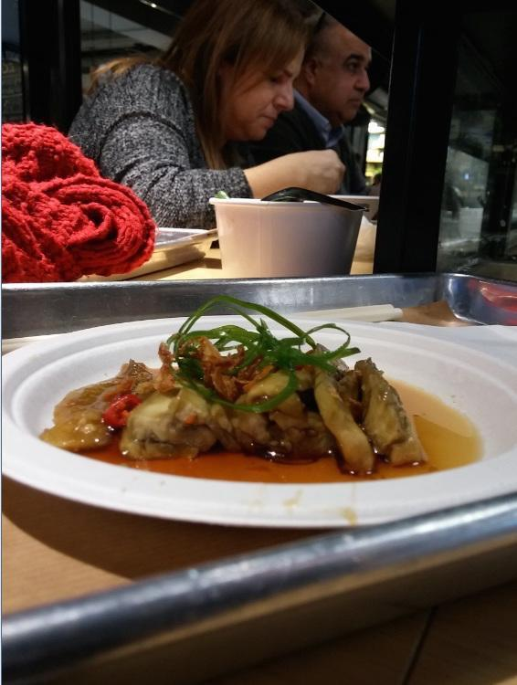
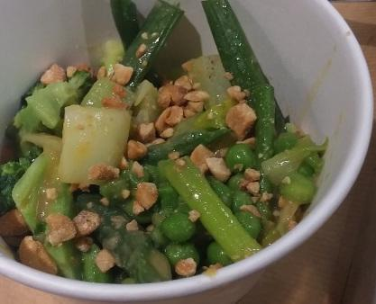
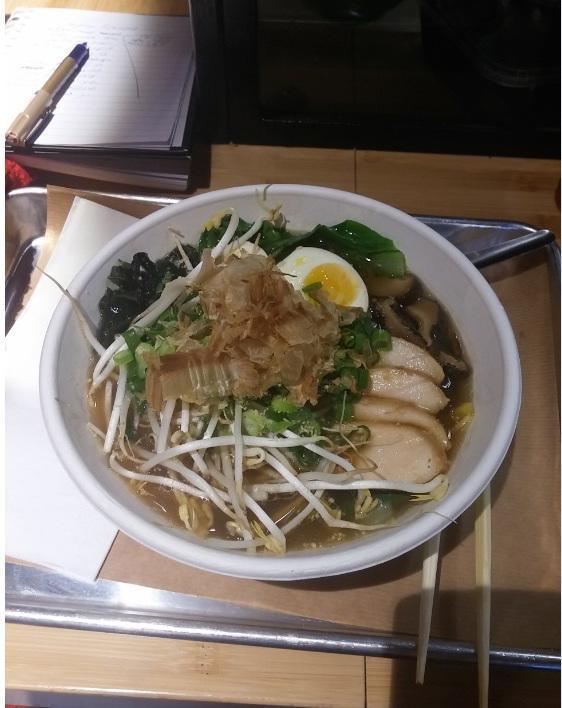

יש מרק שמתאהבים בו
תמיד הייתי אישה של מרקים. אם סטייק אנטרקוט הוא כמו רומן סוער ללילה, אז עם המרק הנכון אפשר להתחתן. יש בו כל מה שצריך: חלבונים, פחמימות, ויטמינים, מינרלים — וכמובן מים בשפע. זה אוכל חם ומנחם, בריא ומשביע.
אחד המרקים האהובים עליי במיוחד הוא ראמן. לכן, כששמעתי שאהרוני פותח בר ראמן במתחם הקולינרי המסקרן „שרונה מרקט”, הדרך מהפס החם לקיבה שלי הייתה קצרה.
„פריסטייל ראמן בר” נפתח כחודשיים קודם לכן, בלב השוק האורבני. האווירה במקום דינמית ומלאת תנועה: הבר הפתוח והתפריט התכליתי יוצרים תחושה של דוכן אוכל, אבל חומרי הגלם מספרים סיפור של מסעדה ברמה.
פותחים בסלט, ומרימים צ׳ייסר
מנת הדגל של המקום היא כמובן הראמן, שמגיע בגרסאות עוף, בקר וטבעונית. לצדו יש מבחר מצומצם ומדויק של מנות ראשונות, תה תבלינים עדין שמכינים במקום, וגם סאקה מתובל במלפפונים, סצ׳ואן וגרידת ליים.
למנה הראשונה בחרתי בסלט החציל ובסלט הירוקים.

סלט החציל הורכב מרצועות של חציל מאודה, שהוגשו על מרינדה של סויה, מירין, שום ויוזו. מעל פוזרו שבבים קטנטנים וקריספיים של בצל מטוגן. נוצר משחק מוצלח בין המרקם הרך של החציל לזה הפריך של הבצל. כמה נגיעות של צ׳ילי חריף השלימו את החגיגה האסייתית והפכו אותה, לרגע, לטברנה ישראלית פוסט־מודרנית.
סלט הירוקים כלל ברוקולי, אפונה, פאק צ׳וי ובצל ירוק חתוכים גס. הרוטב הזכיר לי מרמלדת הדרים: מתוק כמו סוכרייה, ושונה מרוב הוויניגרטים הפירותיים שטעמתי. המירין הוא מרכיב מרכזי בתפריט, ומי שמשתמש בו בהחלט יודע מה הוא עושה.

בין מנה למנה הורדתי צ׳ייסר של סאקה — פעולה שזרמה בטבעיות כשישובים סביב בר, שבמקרה הזה היה מואר וצבעוני, ולא מעושן ואפלולי.
קערת הראמן מגיעה לשולחן
לבסוף הגיעה החגיגה שלשמה התכנסנו: מרק הראמן.
הציר היה ארומטי ועשיר, אבל עדיין קליל ונעים. בתוכו חיכו נבטים, חצאי ביצה קשה, אטריות אסייתיות ממכרות, דייקון כבוש, אצות קומבו, בצל ירוק ופרוסות עוף. העוף נחתך בגודל נוח לאכילה בצ׳ופסטיקס וספג טעמים מעושנים מהבישול המשותף עם שאר המרכיבים.

גרסת הבקר הייתה דומה, עם גרגרי בשר בקר טחון ששייטו להם בנחת במקום רצועות העוף.
גם לאופציה הטבעונית יש מקום
ראוי לציין את המאמצים של ענבר, מנהל המקום, שלקח ברצינות את חוויית הטבעונים. הוא סיפר שנוצרו לא פחות מארבעים גרסאות של ציר טבעוני, במטרה להגיע לציר עשיר שלא נופל באיכותו מהציר הבשרי. מתוך הארבעים נבחרו שלוש, שהובאו לבחינה של אהרוני.
טעמתי את הציר. הוא היה מעט מלוח מדי, אבל כנראה הציר הטבעוני העשיר וה„בשרי” ביותר שטעמתי עד אז. גם הטופו היה מעניין וטעים, התאים למנה ולא הרגיש כמו תוספת סתמית. מבחינתי, האופציה הטבעונית בהחלט התמודדה מול אחיותיה הבשריות.
בשורה התחתונה
אלה היו מנות טעימות ולא שגרתיות, עם השקעה נטולת פלצנות ומחירים ידידותיים לכיס: סלט חצילים וסלט ירוקים עלו 18 ש״ח כל אחד, מרק ראמן עלה 52 ש״ח, ותה התבלינים עלה 10 ש״ח.
שרונה מרקט היה אז אחד המקומות המעניינים בעיר, גם מבחינה קולינרית וגם כמקום בילוי.
לכו. תאכלו. שטפו את העיניים. חזרו לספר.